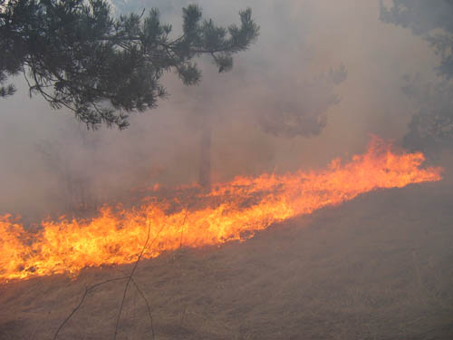
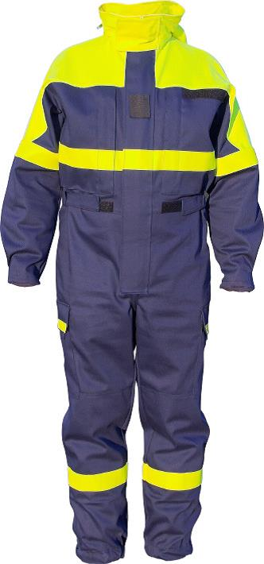
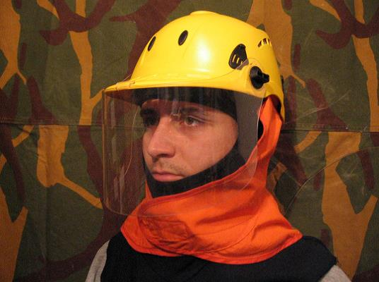
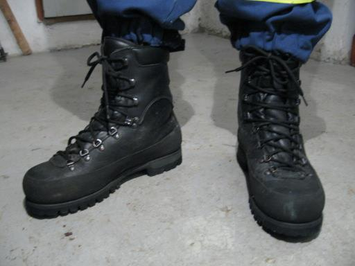
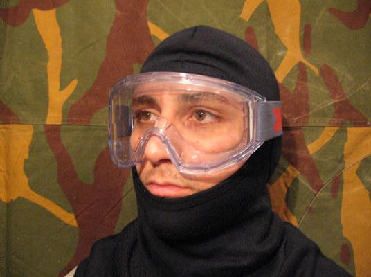
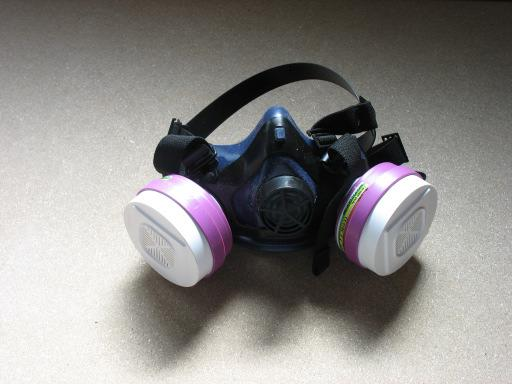

GAŠENJE POŽAROV V NARAVI
UVOD
V Evropski uniji vsako leto zgori povprečno 500.000 hektarjev gozdov. V najbolj prizadetih državah članicah tako dosežejo tudi 50.000 požarov letno. Število požarov v zadnjih letih narašča in se širi tudi zunaj sredozemskega območja, tako da postaja to vprašanje splošni problem, ki se tiče vse Evrope. Glavni vzrok za nastajanje gozdnih požarov je človeška dejavnost: 90 % vseh požarov povzroči človek. Od preklica Uredbe (EGS) št. 2158/92 ni več posebne gozdne politike, ki bi obravnavala preprečevanje požarnega tveganja. Približno 94 % požarov v svetu nastane zaradi takšnih ali drugačnih aktivnosti ljudi. V Sloveniji je kar 51 % gozdnih požarov, izračunanih na površino, neznanega vzroka. Le pri 49 % vseh požarov so ugotovili njegov vzrok. Samo okoli 2 % gozdnih površin pogori zaradi naravnega vzroka (strela). Človek je povzročitelj kar 47 % vseh gozdnih požarov, izračunano na površino. Namerni požig je vzrok za 4 % pogorelih gozdnih površin, človeška malomarnost, neprevidnost in neredko tudi nepoznavanje nevarnosti pa je vzrok za nastanek 43 % pogorišč gozda.

Pogoj za uspešno posredovanje gasilcev pri gašenju požarov vsekakor predstavlja tudi primerna osebna zaščitna oprema.
GASILSKI ZAŠČITNI KOMBINEZON po mednarodnem standardu ISO 15384 in evropski normi EN 15614: 2007 je potrdila tudi Gasilska zveza Slovenije. Pri gašenju požarov v naravi se moramo zavedati, da previsoka zaščita pred ognjem za gasilca pomeni precej večjo nevarnost kot ogenj. Gašenje požarov v naravi velikokrat traja dlje časa in od gasilca zahteva velik fizični napor. Visoka zaščita onemogoča zračenje telesa in s tem uravnavanje telesne temperature, kar lahko privede do resnih zdravstvenih težav (toplotni udar, srčni infarkt …). In to je tudi odgovor na vprašanje, ali lahko požare v naravi gasimo z gasilsko ognjevarno obleko. Manjše in kratkotrajnejše lahko, pri daljši uporabi pa se vsekakor izkažejo mnoge prednosti kombinezona. Prav pri izbiri materiala za kombinezon se velikokrat izkaže, da so bombažni kombinezoni s tega vidika primernejši, saj zagotavljajo visoko stopnjo zračenja v primerjavi s kombinezoni iz nomexa. Zaradi navedenega je mednarodna skupnost sprejela dva standarda, in sicer ISO 15384 in EN 15614. Tipiziran slovenski kombinezon upošteva njuna pravila. Zavedati se moramo, da kombinezon ne daje zaščite pred toploto kot ognjevarna oblačila, narejena po standardu EN 469, in ga samostojno ne smemo uporabljati v te namene. Za boljšo zaščito se priporoča, da ima gasilec pod kombinezonom spodnje perilo iz materiala nomex ali drugih materialov, certificiranih v ta namen. Material kombinezona ne ščiti uporabnika pred vodo in pred hujšim mrazom ali vetrom.


ZAŠČITNA ČELADA daje zaščito glavi in posledično tudi telesu. Pomembna je majhna masa čelade, saj bomo le tako dosegli doslednost uporabe ob intervenciji. Zelo koristen del čelade je vizir, ki preprečuje učinke toplotnega sevanja in varuje obraz pred poškodbami z vejami … Nekateri tipi čelad imajo namesto vizirja nameščena zaščitna očala, ki varujejo oči tudi pred dimom. Čelada mora imeti zavesico za zaščito tilnika in ušes iz samougasljive tkanine. Oblikovana mora biti tako, da varuje tudi brado in vrat. Čelada mora imeti možnosti pritrditve svetilke, očal, glušnikov...

ZAŠČITNA PODKAPA naj bo obvezen del osebne opreme vsakega gasilca, saj nudi dobro zaščito glave in prsnega dela.
ZAŠČITNE ROKAVICE ščitijo roke pred toploto, odrgninami, mrazom … Ključno je, da so izdelane iz materialov, ki slabo vpijajo toploto. Večplastne rokavice odlično ščitijo pred toploto, medtem ko se enoplastne izkažejo pri delu z radijsko postajo, vrvmi … Priporoča se, da imajo rokavice visoko manšeto za zaščito podlakti, na kateri je ježek za regulacijo širine.
ZAŠČITNI ČEVLJI morajo zagotoviti zanesljivo in varno hojo po brezpotjih. Model čevlja je odvisen od terenskih razmer, kar naj bo osnovno vodilo pri nakupu. Izkazali so se čevlji na vezalke (boljši oprijem noge) tipa gojzar. Drugi gasilski zaščitni škornji (Haix, Rosenbauer, Dolenc …) pri dolgotrajnejši uporabi pogosto povzročijo odrgnine goleni. Uporaba gumijastih škornjev ni primerna (slab oprijem noge, žulji...).

DELOVNI PAS Z OPRTNIKOM je namenjen lažjemu in udobnejšemu prenosu opreme (radijska postaja...).
TRANSPORTNA TORBICA se namesti na delovni pas in služi prenosu različne opreme (prva pomoč, podkapa, zaščitna dimna očala, filter za dim, plastenke s pijačo, bombažne rute...).
ZAŠČITNA DIMNA OČALA ščitijo oči pred poškodbami in hkrati preprečujejo vdor dima. Dimna očala uporabljamo v kombinaciji s filtrom za dim.

FILTER ZA DIM zaščiti dihala in omili vnos dimnih produktov v telo gasilca. Osnova je respirator iz tekstila, boljšo zaščito pa nudi filter s plastično polmasko. Filter za dim uporabljamo v kombinaciji z dimnimi očali.

BOMBAŽNA RUTA je enostaven in vsestranski pripomoček, ki ga lahko gasilec uporabi za zaščito dihal (dim), glave (močno sonce)...
DRUGA OPREMA, ki jo moramo predvideti glede na razmere, v katerih se soočamo s požarom v naravi. Mednjo spadajo: nahrbtnik, osebni komplet za prvo pomoč, čelna svetilka, športno perilo z dolgim ali kratkim rokavom, senčni klobuk, priročno večnamensko orodje, jopa in hlače iz termovelurja, kapa in rokavice za zaščito pred mrazom, pohodne nogavice, gamaše, gozdarska čelada, zaščitne hlače za delo z motorno žago, komplet vrvne tehnike za delo na strmih pobočjih...